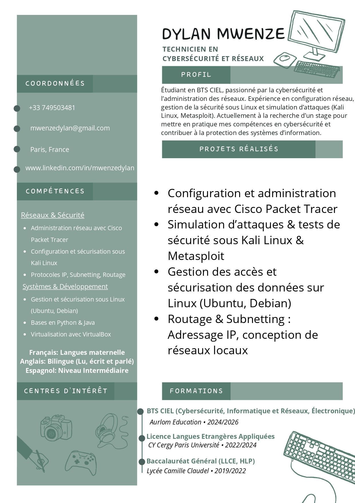

Bonjour et bienvenue sur ma page cv ! Engagé et dynamique, j’aime m’investir dans des projets enrichissants qui allient travail d’équipe, apprentissage et impact social. Mon expérience en activité associative m’a permis de développer des compétences en communication, gestion de projet et engagement citoyen. Passionné de sport, j’apprécie l’analyse des performances et la stratégie, trouvant dans chaque discipline une source d’inspiration et de dépassement de soi. J’ai également travaillé sur un chantier, où j’ai acquis des compétences en organisation, logistique et adaptation à un environnement dynamique.
